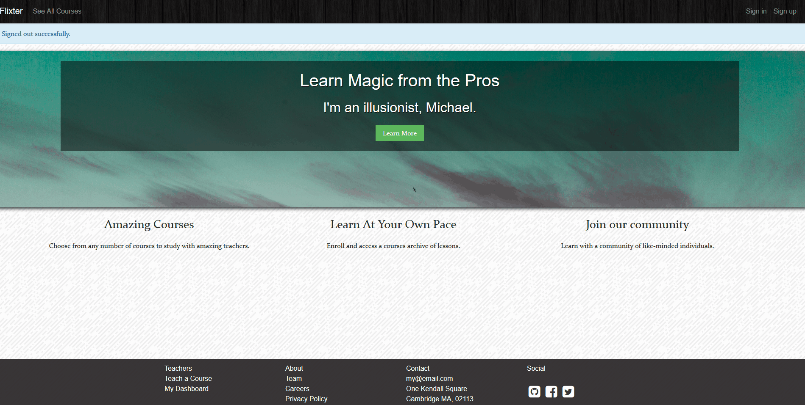
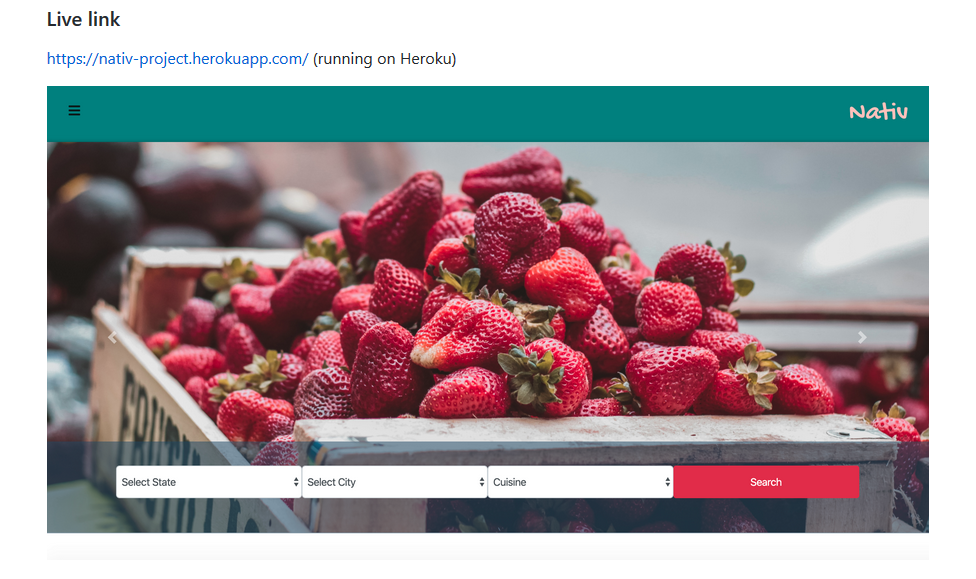

Ricardo Salcido
SOFTWARE ENGINEER
A Junior Web Developer proficient in front-end and back-end technologies.
An alumnus of Vanderbilt University Boot Camp skilled in HTML5, CSS3, JavaScript, Ruby,
Ruby on Rails, jQuery, Bootstrap, Express.js, React.js, Node.js, MERN Stack, Database Theory, MySQL,
Command Line, Deployment (Heroku, Git), and Quality Assurance (Writing Tests).
With a demonstrated history of working in the logistics and supply chain industry as an Inventory Management Specialist,
a versatile professional fluent in both business and technology.


Code Snippets
Temperature Conversion
This Ruby program will prompt the user for a temperature
in degrees Celsius and let the user know what the
corresponding temperature is in Fahrenheit.
puts "Enter degrees in Celsius:"
f = gets.chomp.to_f
def C_to_F(f)
return f * 9/5 + 32
end
results = "The temperature is #{C_to_F (f)} degrees in Farenheit"
puts results
puts "Enter a number:"
num = gets.chomp.to_i
tens_place = num % 10
exception = num % 100
if exception == 11 && 12 && 13
puts "That's the #{num}th item"
elsif tens_place == 0
puts "That's the #{num}th item"
elsif tens_place == 1
puts "That's the #{num}st item"
elsif tens_place == 2
puts "That's the #{num}nd item"
elsif tens_place == 3
puts "That's the #{num}rd item"
else
puts "That's the #{num}th item"
end
Ordinal Challenge
This Ruby program will convert a plain number
to the ordinal of the number. So for example,
if the user enters 2, it will display 2nd, if
the user enters 3, it will display 3rd, etc.
Foobar
This Ruby program is an adaptation of a classic technical
interview problem which displays sequences
of the Foobar pattern.
puts "How many items in a pattern would you like to see? "
digits = gets.chomp.to_i
list=[]
(1..digits).each do|ui|
if ui % 3 == 0 && ui % 5 == 0
list.<< "FOOBAR"
elsif ui % 3 == 0
list.<< "FOO"
elsif ui % 5 == 0
list.<< "BAR"
else
list.<< ui
end
end
puts list
Web Apps
History of ReactJS

Application that covers the fundamentals by using an interactive flashcard app that tells the story of React and its role in the industry.
Used: ReactJS & CSS
Two-Sided Market Place

This application is a two-sided video-streaming marketplace, featuring credit card payment capabilities, user role management, advanced UI and UX, and advanced database relationships, which is like other platforms like Udemy.
Used: Ruby on Rails, HTML, CSS, Payments with Stripe
Yelp Clone

Nomster is a database-driven web application that is deployed live on the Internet.
Used: Ruby, HTML, CSS, JavaScript
Test Driven Development

An Instagram clone that was built using industry-standard, test-driven development following numerous red/green/refactor cycles.
Used: Ruby, HTML, CSS, JavaScript
Single Page Todo Application

This single-page to-do application features a fluid user interface that– by using JavaScript– allows users to rapidly add dynamic content.
Used: Ruby, HTML, CSS, JavaScript
Agile Team Project

Worked on an Agile software development team building a Search application. Under the guidance of a senior software engineer, we had weekly Agile team meetings for code reviews, sprint planning, and feature assignments.
Used: Rails on Rails
Ricardo has developed proficiency and expertise
in the following programming languages and
comfort with the following tools.